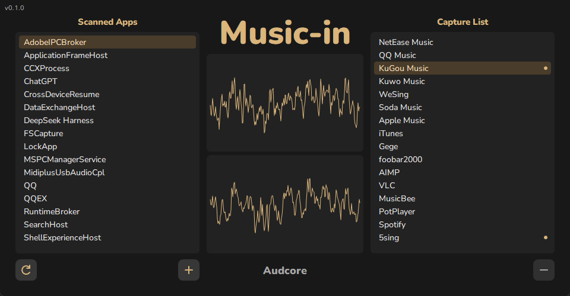

刷新列表，选中要接入的程序
左侧查看扫描到的程序，选中后点击加号加入捕获名单。网易云音乐、QQ 音乐、酷狗音乐和全民 K 歌等常用播放器已在右侧。
Windows x64 · VST3
把播放器的声音
接进你的宿主
选中播放伴奏的程序，把声音接进通道。用双声道波形确认声音进来了，新增的播放器名单随工程保存。

打开通道的输入菜单，选择「截获播放器」，然后在播放器里开始播放。这个功能在声核里免费，直接选用即可。
左侧查看扫描到的程序，选中后点击加号加入捕获名单。网易云音乐、QQ 音乐、酷狗音乐和全民 K 歌等常用播放器已在右侧。
两块示波区分别显示捕获到的左右声道。下次打开工程，手动添加的播放器会自动回到名单里。
适用于 Windows 64 位 VST3 宿主
下载后，把 Music-in.vst3 放进宿主的 VST3 扫描目录并重新扫描。播放器兼容性取决于版本、输出方式和内容保护。
¥9.90
VST3 购买暂未开放。
付款由支付宝处理。声核用订单号、商品版本、金额、付款状态及支付宝交易号核对交易和提供下载。浏览器保存订单和下载凭据，服务端保存凭据的校验值。订单链接可用于再次下载，请保存并避免公开分享。